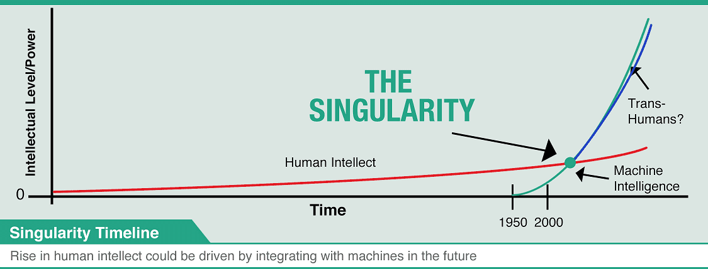
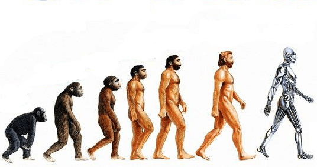
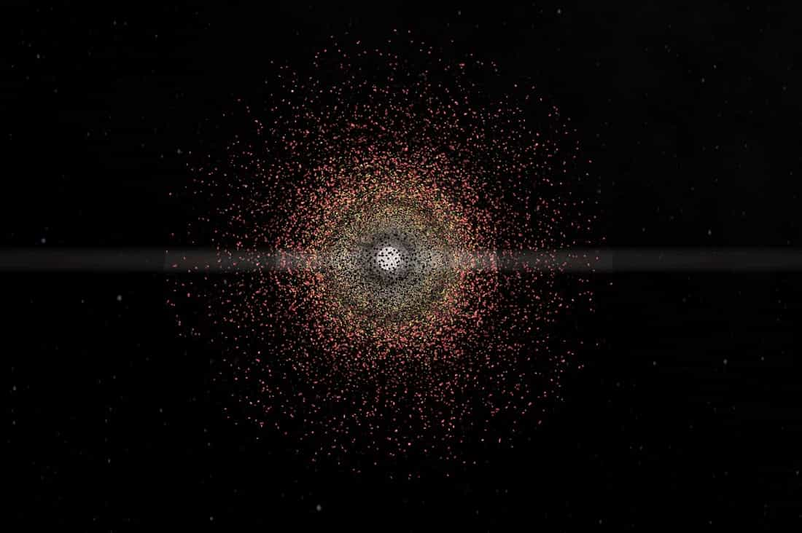
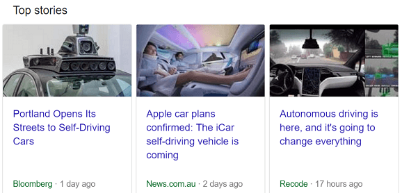

Thomas Hobbes is an Australian uni student hiding out in his mother's basement waiting for the singularity to arrive. As a backup plan he is secretly hoping to avoid the perils of an actual career by becoming a writer and travelling the world.


Having read (and also written) quite a lot of science fiction it took me a surprisingly long time to read Charles Stross’ landmark book Accelerando. Originally written in sections from 2000-2005, the book has already proven remarkably prescient with the spread of the global internet and the collapse of old social norms. Although we won’t know for sometime, I have already come to suspect that Accelerando may very well be the most prophetic book yet written about the future history of the 21st century.
Nearly all science fiction, even of the harder variety, tends to envisage a future where humans are still basically in charge. We may have robots, spacecraft, AI and all manner of future technologies, but humans still dominate society. This has held true all the way from Star Trek to The Expanse.
Charles Stross takes a completely different approach. He looks at Moore’s Law – the basic rule that computing power has doubled every 24 months since the 1960s, and decides to keep following it all the way to the hypothetical point known as a ‘technological singularity’ when computers overtake humans and are better able to make improvements to their own operating systems. Beyond this point, your typical, run-of-the-mill biological humans like you and me become mere observers to what follows, as our digital spawn overtake us in every way imaginable.

The resulting novel is in three parts, each spanning the early, mid and late 21st century respectively and following three generations of a single family (major spoilers to follow).
The first part of the novel depicts a world only slightly evolved from our own, though with the internet growing in influence all the time. In the second decade of the 21st century, headlines include – ‘a marginally intelligent voicemail virus masquerading as an IRS auditor has caused havoc throughout America, garnishing an estimated eighty billion dollars in confiscatory tax withholdings into a numbered Swiss bank account’ and ‘a different virus is busy hijacking people’s bank accounts, sending ten percent of their assets to the previous victim, then mailing itself to everyone in the current mark’s address book: a self- propelled pyramid scheme in action. Oddly, nobody is complaining much…’
Our first protagonist, Manfred Macx, is a ‘venture altruist’. His profession is ‘essentially coming up with whacky but workable ideas and giving them to people who will make fortunes with them’. In return, Manfred never has to pay for anything, allowing him to live off the grid beyond the tyranny of money or governments.
He is contacted by what turn out to be recently uploaded brain scans of the California spiny lobster seeking asylum from human influence (it gets weirder). Manfred helps them, and in the process creates a new legal precedent on the rights of AIs and uploaded minds. Other plot points include Manfred getting divorced from his wife Pamela who keeps their daughter (frozen as a newly fertilized embryo) and a mugging in which Manfred’s digital memories are stolen, causing him temporary amnesia.
Part two focuses on Macx’s daughter – Amber, now in her early teens. Wishing to get away from her overbearing mother, she and Manfred hatch a complicated legal scheme. A shell company is set up in Yemen – one of the few countries to permit both limited liability companies and legal slavery. Amber then sells herself into slavery for a company which she technically owns, legally freeing herself from her mother.
On the advice of Manfred’s talking robotic cat (which by this point, is secretly the smartest member of the whole family), she decides not to go live with him (he and his new partner being hedonistic swingers) and instead takes up with a new space company which is staging an expedition to Jupiter (children making better astronauts due to their smaller size – and this generation has already grown fiercely intelligent).

A few years later, in orbit around Jupiter, Amber runs into further legal trouble. She is still not 18 and Yemen is about to outlaw slavery. Meanwhile, her mother has converted to Islam. Due to a series of legal quirks, this makes Amber a Muslim as well and puts her under the influence of the local Imam – the first one of which has just arrived in Jupiter space. He begins to consider her case, but before he can come to a decision Amber enlists the help of the other members of the expedition to set up a new settlement on Jupiter’s moon Amalthea and declare herself sovereign, becoming queen of the new ‘Ring Imperium’.
All of this takes place so she can get away from her mother.
The story gets more and more outrageous from there. Around mid-century, the solar system begins to feel the full effects of a technological singularity. Starting with the asteroids, before moving to the inner planets, more and more mass is harvested and turned into orbiting bits of computronium. It is the beginnings of a Matrioshka brain, a giant computer network powered by the output of our home star.

The scariest part of the novel is that no matter how bizarre it gets, every action in the sequence of events seems to make basic sense given what came before. There’s almost no use of ‘phlebotinum’ here, no mysterious warp drive or ‘tri-lithium crystals’ whose inner workings remain a mystery to the reader. Everything is described in intimate, logical detail. This is speculative fiction, not your typical sci-fi.
I will grant some criticisms of the novel. It was originally compiled as a series of short stories, making the plot a little jarring at times. The characters are not written in great depth, and sometimes seem as little more than blank figures Stross can use to navigate the rapidly changing world he creates. It can be rather hard to read, and the story takes a while to truly build. I noticed a fair few one-star ratings on Goodreads by people who seemed to get lost in the complex world Stross builds.
But if you’re remotely interested in the theory of the singularity and how our world might dramatically change in the coming decades, ‘Accelerando’ is essential reading. I was born in the 1990s and consider myself a fairly rational person. Reading the novel honestly has me wondering whether we’ll start to see the asteroids, Mercury and Venus being dismantled and turned into computer chips in my lifetime.
The idea of the singularity is finally starting to enter the public consciousness. This article by blogger Tim Urban goes into it in great detail. While a growing body of fiction is being devoted to it. Hollywood has been exploring (usually in very broad brushstrokes) the idea of a ‘robot revolt’ of some kind for quite a while, but written fiction has explored well beyond this point. Very likely, we’re not talking about some coming human-machine war. We’re talking about a future where AI has progressed to the point that human beings are simply obsolete. Its a very real economic reality that we’re already starting to see.

Even twenty years ago the idea of the singularity still seemed as far-fetched as the Tooth Fairy. At that point we had just seen the first AI which could beat the best human chess grand champions – now they’re translating languages, driving cars and landing rockets by themselves. In another twenty or thirty years – who knows where we’ll be?
There are of course, still legions of skeptics. The singularity has been described by one critic as ‘intelligent design for IQ 140 people’. Maybe the whole idea is rooted in wishful thinking? Maybe, absent religion, our fear of death has refocused on the idle hope that our technology may soon allow us to break our biological limits and remain young forever?
Regardless, it seems a very real and emerging answer to the human condition – the crippling realization we all face on occasion that we are ‘immortal souls trapped in an animal’s body’. Either our souls go somewhere else after we die, or we simply decide to upgrade the body. The latter at least seems a testable hypothesis.
Even if the theory of the singularity is wrong, and the world in 2050 or 2100 is only as different as 1950 or 1900 is to us (meaning technology has continued to advance but humans are largely unchanged) Charles Stross paints a fascinating and, quite frankly, terrifying vision of the future. He has taken Ray Kurzweil’s dry theories and created a rich story out of it, almost making you feel like you’ve lived through a singularity yourself and survived to tell the tale. You finish the book feeling a bit like a time traveler who’s suddenly returned from the 23rd century – and may feel a sudden urge to start running around warning your friends and family about what’s going to happen to the world.
To date, very few authors have dared write about a universe where us puny humans really do become just that, though Iain M. Banks would be another exception with his excellent ‘Culture’ series of novels.
So keep living your life of course, and keep improving yourself. Keep lifting weights, accumulating money and banging bitches, but there’s a decent chance in a few decades that everything we consider meaningful will have suddenly become obsolete, like a caveman wondering why he can no longer go hunting in a paved suburb.
That’s when the adventure will really begin. To both those enthusiastic about the idea of the Singularity and highly skeptical, I recommend giving Accelerando a read to decide for yourself. You can find the full text of the novel for free here.
Read More: Charles Bukowski: Literature And Poetry For Men